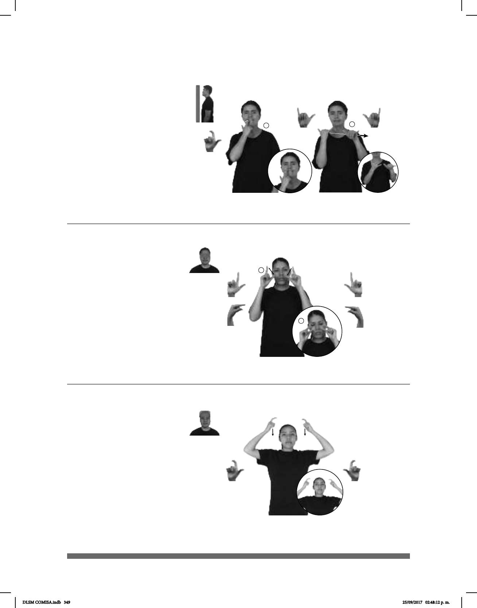

349
(L-27)
Seña: SC: I. SM; II. SS
I. L.10; II. Y1
I. Palma hacia adentro;
II. Palmas hacia abajo.
I. Sobre el diente; II. A
la altura del pecho del centro al lado
izquierdo.
II. Recto.
Boca abierta y
mostrando dientes.
adj. Que es hábil para
engañar o evitar el engaño, que es listo
para conseguir lo que le conviene.
Seña: SS
L.10
Palmas hacia el centro.
De la cabeza a las sienes.
Recto.
Simula la acción de
colocarse una corona.
sust. f. Aro, hecho de
cabeza y se usa como adorno, insignia
realeza.
Seña: SS
Seña que pasa de
Palmas hacia el
centro.
A la altura de los ojos.
Los dedos índice y
pulgar se tocan repetidamente.
Ojos cerrados
repetidamente.
1. adj. Estado de una
persona o de un animal que duerme
o tiene ganas de dormir. 2. sust. m.
Acto de dormir.
1
2
(L-26)
(L-25)
ESA PERSONA COLMILLO pro-TÚ CUIDAR
Esa persona es astuta, ten cuidado.
SIEMPRE NIÑO
izquierda
SUEÑO
El niño siempre tiene sueño.
dm-ISABEL TENER pos-SU CORONA #ORO
Isabel tiene una corona de oro.
DLSM COMISA.indb 349 25/09/2017 02:48:12 p. m.